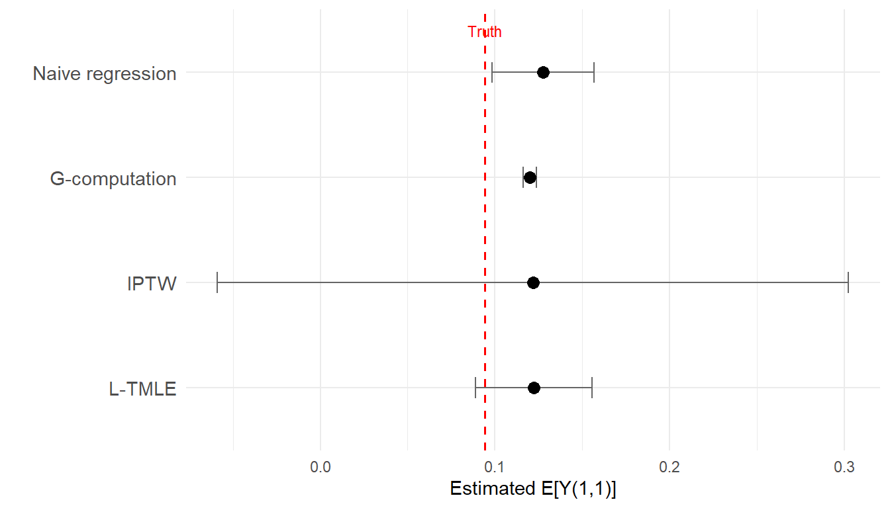

set.seed(2026)
n <- 2000
W_age <- rnorm(n, mean = 40, sd = 10)
W_male <- rbinom(n, 1, 0.6)
W_cd4_bl <- pmax(50, rnorm(n, mean = 350, sd = 120))
W_vl_bl <- rnorm(n, mean = 4.2, sd = 0.7)
W <- 0.01 * (W_age - 40) - 0.001 * (W_cd4_bl - 350) + 0.3 * W_vl_bl - 0.1 * W_male
g1_true <- plogis(0.5 + 0.8 * W)
A1 <- rbinom(n, 1, g1_true)
L1 <- rnorm(n, mean = 0.5 * W + 0.7 * A1, sd = 1)
g2_true <- plogis(-0.3 + 0.6 * L1 + 0.4 * A1)
A2 <- rbinom(n, 1, g2_true)
Y <- rbinom(n, 1, plogis(-0.5 - 0.5 * A1 - 0.6 * A2 - 0.3 * L1 + 0.4 * W))
dat <- tibble(W, A1, L1, A2, Y)11 L-TMLE By Hand: A Technical Companion
Full step-by-step implementation for two time points
Estimated reading time: 30 minutes
Optional / advanced chapter
This chapter provides the full by-hand L-TMLE implementation for readers who want to see exactly how the algorithm works at the code level. It uses the same two-time-point HIV simulation from the preceding conceptual chapter. Most applied readers can skip this chapter and proceed to the LMTP chapters, which provide the recommended practical workflow for realistic longitudinal interventions. Return here if you need to understand the internals of the algorithm.
12 Setup: simulated data
We use the same two-time-point HIV cohort from the conceptual L-TMLE chapter. The data encodes treatment-confounder feedback: ART adherence at visit 1 (\(A_1\)) raises CD4 (\(L_1\)), which affects visit-2 adherence (\(A_2\)) and virologic failure (\(Y\)).
# Oracle truth (separate seed, large MC sample)
set.seed(9999)
n_mc <- 100000
W_mc <- rep(W, length.out = n_mc)
L1_cf11 <- rnorm(n_mc, mean = 0.5 * W_mc + 0.7, sd = 1)
Y_cf11 <- plogis(-0.5 - 0.5 - 0.6 - 0.3 * L1_cf11 + 0.4 * W_mc)
true_EY_11 <- mean(Y_cf11)
cat("True E[Y(1,1)]:", round(true_EY_11, 4), "\n")
#> True E[Y(1,1)]: 0.185513 Phase A: Estimate the treatment mechanisms
At each time point, estimate the probability of receiving treatment conditional on the observed history.
# Time 1: P(A1 = 1 | W)
g1_mod <- glm(A1 ~ W, family = binomial, data = dat)
g1_hat <- pmax(0.01, pmin(0.99, predict(g1_mod, type = "response")))
# Time 2: P(A2 = 1 | A1, L1, W)
g2_mod <- glm(A2 ~ L1 + A1 + W, family = binomial, data = dat)
g2_hat <- pmax(0.01, pmin(0.99, predict(g2_mod, type = "response")))
# Evaluate g2 under the intervention value A1=1
g2_under_a1 <- pmax(0.01, pmin(0.99,
predict(g2_mod, newdata = dat %>% mutate(A1 = 1), type = "response")))
# Cumulative probability of following "always adhere"
g_cumulative <- g1_hat * g2_under_a1
cat("Cumulative g range:", round(range(g_cumulative), 3), "\n")
#> Cumulative g range: 0.191 0.7814 Phase B: Sequential outcome regression (backwards)
14.1 Step 2a: Model the final outcome
Fit \(E[Y \mid A_2, L_1, A_1, W]\), conditioning on \(L_1\) to deconfound \(A_2\). Then predict under \(A_2 = 1\).
Q2_mod <- glm(Y ~ A2 + L1 + A1 + W + A1:A2, family = binomial, data = dat)
Q2_A2is1 <- predict(Q2_mod, newdata = dat %>% mutate(A2 = 1), type = "response")
cat("Q2(A2=1) range:", round(range(Q2_A2is1), 4), "\n")
#> Q2(A2=1) range: 0.076 0.565214.2 Step 2b: Move backwards (the critical step)
Regress the time-2 predictions on \((A_1, W)\) only, without conditioning on \(L_1\). This integrates \(L_1\) out, preserving the mediated effect of \(A_1\) through \(L_1\).
Q1_mod <- glm(Q2_A2is1 ~ A1 + W, family = quasibinomial, data = dat)
Q1_A1is1 <- predict(Q1_mod, newdata = dat %>% mutate(A1 = 1), type = "response")
cat("G-computation estimate E[Y(1,1)]:", round(mean(Q1_A1is1), 4), "\n")
#> G-computation estimate E[Y(1,1)]: 0.2107
cat("True E[Y(1,1)]: ", round(true_EY_11, 4), "\n")
#> True E[Y(1,1)]: 0.1855This is longitudinal G-computation. It depends on all models being correctly specified. The targeting steps below add robustness.
15 Phase C: Targeting for double robustness
15.1 Target at time 2
The clever covariate at time 2 is the inverse cumulative probability of following the full regime:
\[ H_2 = \frac{I(A_1 = 1, A_2 = 1)}{\hat{g}_1(W) \times \hat{g}_2(1, L_1, W)} \]
H2 <- (dat$A1 == 1 & dat$A2 == 1) / (g1_hat * g2_under_a1)
QA_init_t2 <- predict(Q2_mod, type = "response")
# Fluctuation model
fluc2 <- glm(dat$Y ~ -1 + offset(logit(QA_init_t2)) + H2, family = binomial)
eps2 <- coef(fluc2)
# Update Q2 predictions under A2=1
Q2_star <- plogis(logit(Q2_A2is1) + eps2 / (g1_hat * g2_under_a1))
cat("Epsilon at time 2:", round(eps2, 5), "\n")
#> Epsilon at time 2: 0.00412The coefficient \(\hat{\epsilon}_2\) measures how much the initial outcome model needs correcting. A small value means the outcome model was already well-calibrated for the causal estimand.
15.2 Target at time 1
Q1_mod_updated <- glm(Q2_star ~ A1 + W, family = quasibinomial, data = dat)
Q1_updated <- predict(Q1_mod_updated, type = "response")
Q1_under_a1 <- predict(Q1_mod_updated, newdata = dat %>% mutate(A1 = 1), type = "response")
H1 <- (dat$A1 == 1) / g1_hat
fluc1 <- glm(Q2_star ~ -1 + offset(logit(Q1_updated)) + H1, family = quasibinomial)
eps1 <- coef(fluc1)
Q1_star <- plogis(logit(Q1_under_a1) + eps1 / g1_hat)
cat("Epsilon at time 1:", round(eps1, 5), "\n")
#> Epsilon at time 1: 5e-0516 The final L-TMLE estimate
ltmle_est_11 <- mean(Q1_star)
cat("L-TMLE estimate E[Y(1,1)]:", round(ltmle_est_11, 4), "\n")
#> L-TMLE estimate E[Y(1,1)]: 0.212
cat("True E[Y(1,1)]: ", round(true_EY_11, 4), "\n")
#> True E[Y(1,1)]: 0.185517 Comparing estimators
naive_mod <- glm(Y ~ A1 + A2 + L1 + W, family = binomial, data = dat)
naive_pred_11 <- mean(predict(naive_mod, newdata = dat %>% mutate(A1 = 1, A2 = 1), type = "response"))
iptw_w <- ifelse(dat$A1 == 1 & dat$A2 == 1, 1 / (g1_hat * g2_hat), 0)
iptw_est <- sum(iptw_w * dat$Y) / sum(iptw_w)
comparison <- tibble(
Method = c("True E[Y(1,1)]", "Naive regression", "G-computation", "IPTW", "L-TMLE"),
Estimate = round(c(true_EY_11, naive_pred_11, mean(Q1_A1is1), iptw_est, ltmle_est_11), 4)
)
comparison |> as.data.frame()
#> Method Estimate
#> 1 True E[Y(1,1)] 0.1855
#> 2 Naive regression 0.2171
#> 3 G-computation 0.2107
#> 4 IPTW 0.2130
#> 5 L-TMLE 0.2120Show code
ggplot(comparison, aes(x = Estimate, y = factor(Method, levels = rev(Method)))) +
geom_point(size = 3) +
geom_vline(xintercept = true_EY_11, linetype = "dashed", color = "red") +
annotate("text", x = true_EY_11, y = 5.4, label = "Truth", color = "red", size = 3) +
labs(x = "Estimated E[Y(1,1)]", y = "") +
theme_minimal()
18 Sequential double robustness
At each time point, L-TMLE is consistent if either the outcome model or the treatment model is correctly specified:
| Correct at time 2 | Correct at time 1 | L-TMLE consistent? |
|---|---|---|
| \(Q_2\) only | \(Q_1\) only | Yes |
| \(g_2\) only | \(g_1\) only | Yes |
| \(Q_2\) only | \(g_1\) only | Yes |
| \(g_2\) only | \(Q_1\) only | Yes |
| Neither | Anything | Not guaranteed |
19 Scaling to T time points
With \(T\) time points, the same pattern applies:
- Estimate \(\hat{g}_t\) for \(t = 1, \ldots, T\).
- Start at time \(T\): fit \(\hat{Q}_T\), target with \(H_T\).
- Move to \(T-1\): fit \(\hat{Q}_{T-1}\) using targeted \(\hat{Q}_T^*\) as outcome, target with \(H_{T-1}\).
- Repeat until \(\hat{Q}_1^*\).
- Final estimate: \(\hat{\psi} = \frac{1}{n}\sum_i \hat{Q}_1^*(a_1, W_i)\).
Each backwards step conditions on \(L_t\) where it confounds future treatment, and integrates it out where it mediates past treatment.
19.1 Sources
- Petersen ML, Schwab J, Gruber S, et al. (2014). Targeted maximum likelihood estimation for dynamic and static longitudinal marginal structural working models. J Causal Inference 2(2):147-185.
- van der Laan MJ, Gruber S (2012). Targeted minimum loss based estimation of causal effects of multiple time point interventions. Int J Biostat 8(1):Article 9.
- Lendle SD, Schwab J, Petersen ML, van der Laan MJ (2017). ltmle: An R package implementing targeted minimum loss-based estimation for longitudinal data. J Stat Softw 81(1):1-21.